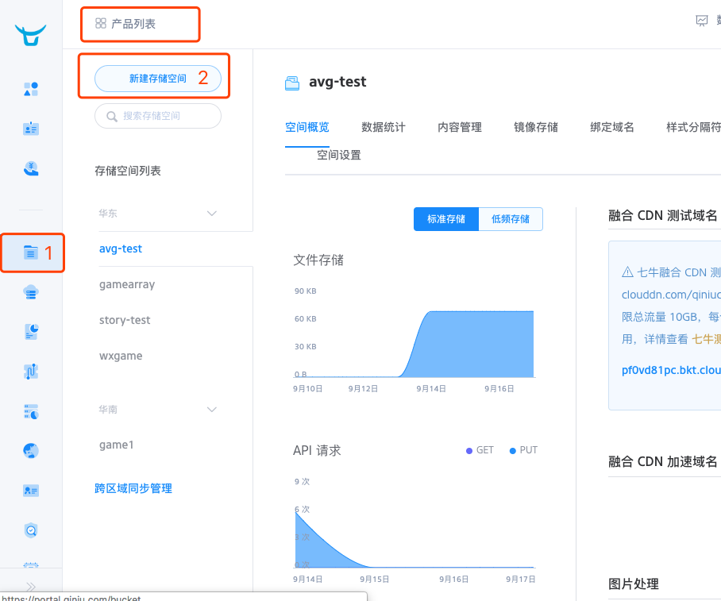
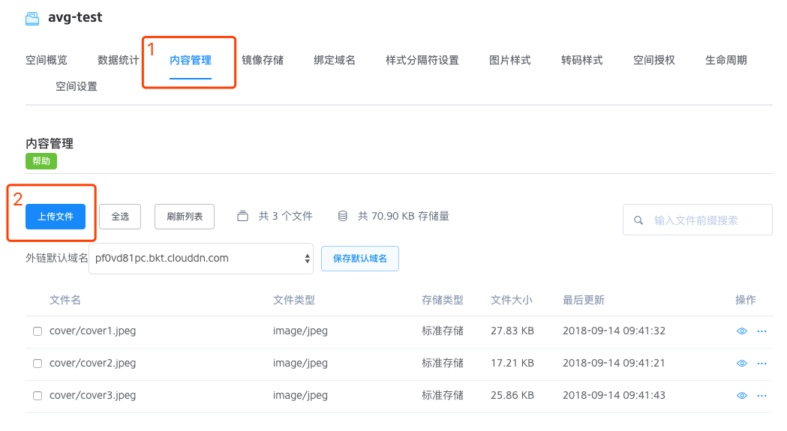
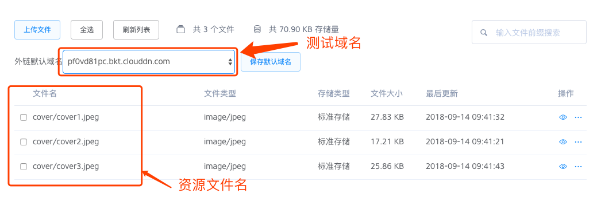

关于远程资源
我的游戏图片放到哪里?
实际生产环境中,不可能每个人都会分配一个远程服务器,所以作者推荐大家使用免费的7牛云存储作为测试资源服务器
使用步骤
- 注册7牛账号: https://www.qiniu.com/
打开控制台,选择新建一个存储空间 
在存储空间列表找到刚才新建的存储空间,选择内容管理,然后上传自己需要的资源图片 
外链默认域名就是测试域名,也就是net.server 和 storyCfg.server字段  如果资源名包含有目录形式,如图在文件名中追加即可
后续计划
在后续开发中,工具会慢慢将该流程集成到cc-runner中,提高内容生产效率